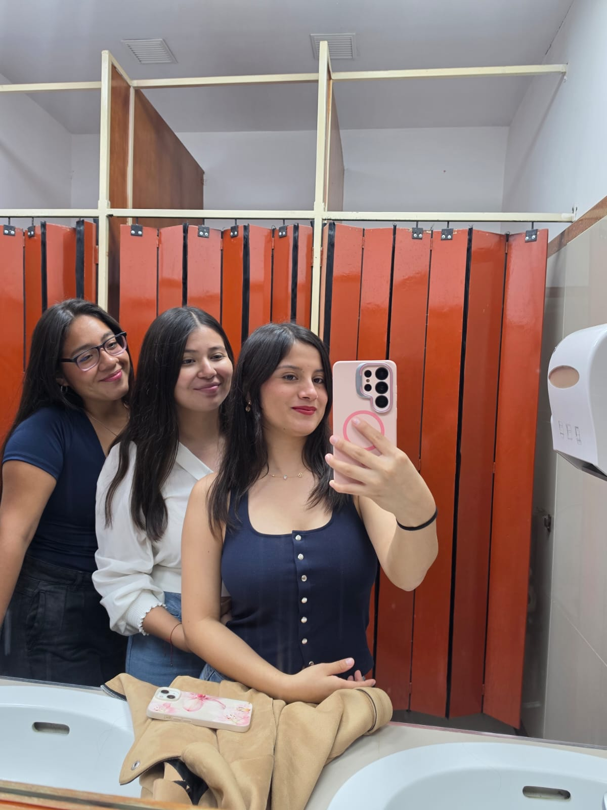

Inicio de Año y Nuevos Propósitos
Comenzando el año con energía, organizando metas personales, proyectos académicos y preparando todo para los grandes retos de los próximos meses.
Comenzando el año con energía, organizando metas personales, proyectos académicos y preparando todo para los grandes retos de los próximos meses.

Un año más de vida rodeado del cariño de mi familia y amigos. Un día lleno de gratitud, buenos deseos y celebración.

Uno de los momentos más emotivos del año: la llegada de mi sobrina Fernanda, llenando de luz, ternura y felicidad a toda nuestra familia.

La familia creció aún más en julio con el nacimiento de nuestras mascotas, trayendo alegría, travesuras y compañía todos los días.